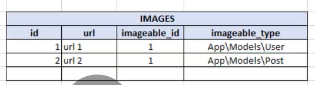

He creado un nuevo ejemplo mas elaborado de reglas de negocio al que hicimos en la parte anterior para poder explicar mejor algunos conceptos, y he resaltado las entidades:
El modelo conceptual del nuevo ejemplo seria el siguiente:
Ahora que ya tenemos todo el diagrama entida relacion listo ya podemos pasar al modelo logico.
El modelo logico consiste en pasar el esbozo o borrador que creamos a un esquema de tablas, donde vamos a especificar los tipos de datos y relaciones en las entidades y atributos.
Utilizando la analogia de una arquitecto al que le piden construir una casa, el modelo conceptual seria un esbozo o borrador del proyecto y el modelo logico serian los planos ya listos a partir de los cuales se va a construir la casa. La ultima etapa del disenio de la base de datos (El modelo fisico) es, al igual que en la metafora se construye la casa, crear la base de datos con codigo SQL.
Para diseniar el modelo logico podemos usar My SQL Workbench.
Cuando se presenta esta relacion entre dos tablas A 1:1 B basta con incluir una Clave Externa en la B para hacer referencia a elementos de la tabla A, y la clave externa no se puede repetir porque un elemento de la tabla A solo puede estar relacionado con un elemento de la tabla B.
Por convencion las claves externas en laravel son el nombre de la tabla externa en singular mas "_id". Por ejemplo, la clave externa de la tabla "users" seria: "user_id"
Cuando se presenta esta relacion entre dos tablas A 1:n B basta con incluir una Clave Externa en la B para hacer referencia a elementos de la tabla A... en este caso la clave externa se puede repetir porque un elemento de la tabla A puede estar relacionado con muchos elementos de la tabla B.
Aqui debemos hacer uso de una tabla "pivote" en la cual vamos a guardar muchas correspondencias entre las dos tablas.
En laravel la convencion para crear estas tablas es juntar los dos nombres en orden alfabetico y en singular. Por ejemplo, para la relacion "users" n:n "roles", la tabla pivote seria: "role_user"
Este tipo de relacion se da en nuestro ejemplo si nos centramos en las tres entidades Users, Images, y Posts... ya que no nos es posible relacionar las tablas como hasta ahora lo hemos hecho porque si agregamos una relacion de A (users) 1:1 B (images), luego no podemos relacionar de 1:1 una tercera tabla C (posts) con B. Que podemos hacer?

Podemos hacer uso de una relacion polimorfica. Esta nos indica que en la tabla B (images) vamos a colocar dos campos, el primero que llevara el nombre de la misma tabla en singular con terminacion "able_id" (images -> imageable_id), y en este campo vamos a colocar los ids tanto de la tabla A (users, los usuarios), como de la tabla C (posts, los posts).

Bien ya puedo relacionar las tres tablas, pero... como identifico si un id del campo imageable_id es de la tabla A (users) o la tabla C (posts)? Para eso es el segundo campo que llevara el mismo nombre de la tabla en singular pero con terminacion "_type" (images -> imageable_type). Aqui es donde vamos a indicar a cual de las dos tablas pertenece.
Ahora que deberia colocar en este campo? Laravel recomienda colocar el Namespace del modelo encargado de administrar esas entidades o tablas... para la entidad posts seria el modelo Post, y para users el modelo User.
Todo bien aqui, pero ahora en esta tabla no hay restriccion para que agregemos el mismo id las veces que queramos en el campo imageable_id:
Entonces debemos hacer uso de una Clave Primaria Compuesta. Cuando se usa este tipo de Claves Primarias? Cuando un unico campo no es suficiente para identificar a un registro... pecisamente en nuestro caso que estamos usando dos campos.
Entonces aqui la clave primaria va a estar formada por el contenido de ambos campos imageable_id e imageable_type, por lo que un registro con el mismo contenido en ambos campos no se podra repetir mas de una vez. Hasta aqui el Modelo Logico nos queda asi:
Las entidades Posts, Comments, y Videos, poseen casi el mismo tipo de relacion, solo que aqui es de 1:n en lugar de 1:1. Se definen casi igual, solamente que aqui si se puede repetir la Clave Primaria Compuesta:
Las entidades Posts, Tags, y Videos, presentan el mismo tipo de relacion solo que de muchos a muchos... entonces vamos a combinar la tabla pivote con lo que aprendimos de relaciones polimorficas: